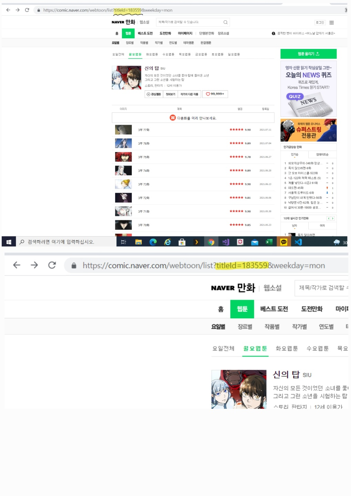

1. if you want to know what your user-agent is, click this: click me
2. if you want to know what titleid is, check the link of the webtoon
for example,

3. when you insert "what episodes will you download?" you have three choices
first, you can insert 'all'. then, the program will download every episodes
second, you can insert startepisode, and lastepisode.
for example, if you insert '1-100', the program will download from episode 1 to episode 100
third, you can insert a single episode you want to download.
for example, if you insert "2", the program will download episode2.